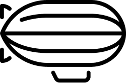

Dans le cadre d'un cours de motion design, j'ai réalisé un clip
vidéo du morceau P-town Blues de Jazzy Bazz. L'objectif etait de retranscrire le morceau de l'artiste selon une nouvelle vision, la mienne.
J'ai travaillé sur la colorimétrie, les plans de vue ou encore le dynamisme pour créer un réel projet abouti qui raconte véritablement quelque chose.

Après un concert, j'ai decidé d'utiliser les logiciels Photoshop et Illustator pour réaliser une affiche fictive pour le groupe de rap Fixpen Sill
Pendant un projet fictif, j'ai pu avec mon groupe réaliser la campagne de commercialisation d'une gamme de Catamaran appelée Korabl. La gamme était produite par Gopro et inspirée de la Russie impériale.
Etudiant à HETIC dans le programme Grande Ecole je développe aujourd’hui des compétences pour les métiers du numérique, conscient de leur place dans le monde de demain. Mes expériences sur le marché du travail et dans ma vie sociale m’ont permis de développer des valeurs et des capacités, notamment pour le travail en équipe et l’efficacité. Je cherche toujours à évoluer et j’espère profiter de notre collaboration pour mettre à profit ma créativité, mon dynamisme et ma détermination.